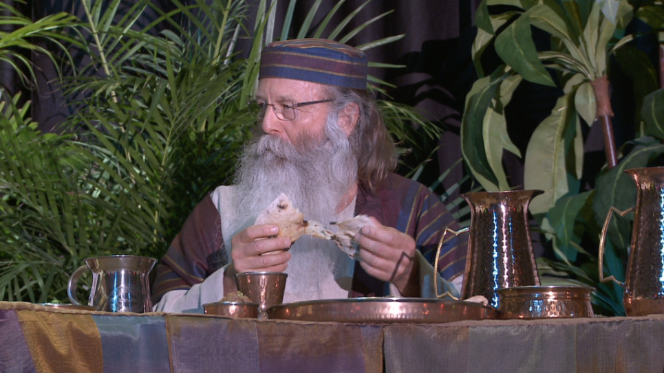

OUR BELIEFS
1. We believe the Whole Bible is the inspired, infallible, authoritative Word of G-d. 2. We believe that there is one G-d, eternally existent who chooses to manifest Himself in various ways (The Shma in Judiasm). 3.We believe in the diety of the L-rd Yeshua, the Messiah, His virgin birth, His sinless life, His Miracles, His vicarious and atoning death through His shed blood, His bodily ressurection, His ascension to the right hand of the Father, and in His personal return in power and glory,(Luke). 4. We believe that a person must confess their sins, ask G-d for forgiveness of those sins and be baptized by immersion in Yeshua's Name, (Acts 2:38). 5. We believe that for the salvation of lost and sinful man, regeneration by the Holy Spirit is absoulutely essential. 6. We believe in the present ministry of the Holy Spirit by whose indwelling the believer is enabled to live a G-dly life. 7. We believe in the spirtualy unity of all believers, both Jew and Gentile in the L-rd Yeshua the Messiah, (Ehpesians 3:4-6). 8. We believe that the Torah and the Ten Commandments and other commandments are still applicable today. Yeshua never did away with them, rather he clarified them. 9. We believe that as born again Gentile followers of Yeshua, we are grafted into the Olive Tree that is Israel and thereby called to practice a Hebrew biblical heritage and are part of spiritual Israel and the universal body of believers. This is part of our identity and a witness to the faithfulness of G-d. 10. We believe that the whole house of Israel is G-d's chosen people and were never replaced by the "Church". The Church was only grafted into the Olive Tree that is Israel after some of the branches were broken off due to unbelief and idol worship, therefore we should support Israel. HaShem says "I will bless those that bless Israel and I will curse those that curse Israel,"(Genesis 12:2, Romans 11:11-18). 11. We believe that G-d never authorized a change in the day of worship from the Sabbath to the first day of the week, Sunday, a pagan day of worship. Yeshua and His Talmedim worshiped on the Seventh day Shabbat. 12.We believe that Yeshua was not crucified on Good Friday as the "Church" would have you believe. Rather He was crucified Wednesday around noon and resurrected sometime around sunset on the Sabbath. Therefore the basis for the "Churches" Sunday Worship is invalid(check matthew, etc). 13. We believe The L-rd's Supper should be partaken of once a year, the beginning of night of Pesach, (Nissan 14), and that foot washing should be included as part of the service, (John 13:-8). 14. We believe that there are three festivals we must celebrate, Pesach, Pentecost and Succot(Liviticus 23). 15. We believe that Yeshua was not born on December 25th. as the "Church" would have you believe, but rather Mariam conceived Yeshua by the Holy Spirit During Hannakah, The Festival of Lights and Yeshua was born nine months later sometime during Succot, (late september or early October),(Luke 1:5-56)"./reference/Yeshua's Birth-Part1.pdf" 16. We believe that Holloween and All Saints day has no place in the "Church"(Deuteronomy 18:10-12a, Exodus 22:18, Rev 21:8). 17. We believe that Allah is not the G-d of Abraham, Isaac and Jacob. Mohammed was a false profit and Islam is a false religion and the spirit of Antichrist, (1 John 4:3, 1 John 2:22, 2 John 1:7, 2 Thesalonians 2:6-12). Easter is a worldwide tradition involving many customs that people believe to be Christian. What is the origin of Lent and sunrise services? How did rabbits, eggs and hot cross buns become associated with Christ's Resurrection? Is Easter mentioned in the Bible? Did the apostles and early Church keep it? The answers will shock you! Most people follow along as they have been taught, assuming that what they believe and do is right. They take their beliefs for granted. Most do not take time to prove why they do the things that they do. We are approaching the time of the year when the world celebrates the supposed birth of Jesus Christ. The jingles on the radio and television invade our sanity earlier every year, and the decorations now go up before Halloween! Anywhere we go, Christmas "cheer" is inescapable. For most of us, this is a season we struggle through, wishing it would rush by and be over. Here is a man who was born in an obscure
village, the child of a peasant woman. He grew up in
another obscure village. He worked in a carpenter shop
until he was 30, and then for three years He was an
itinerate preacher. He never wrote a book. He never held an
office. He never owned a home. He never had a family.
He never went to college. He never travelled more than
two hundred miles from where he was born. He had no credentials
but Himself. He had nothing to do with this world except the
naked power of his devine manhood. While still a young man, the tide of popular
opinion turned against Him. His friends ran away.
One of them denied Him. He was turned over to his
enemies. He went through the mockery of a trial. He
was nailed to a cross between two thieves. His executioners
gambled for the only piece of property He had on earth
while He was dying...and that was His coat. When
he was dead He was taken down and laid in a borrowed
grave through the pity of a friend. Ninteen wide centuries have come and gone
and today He is a centerpiece of the human race
and a leader of the column of progress. I am far within the mark when I say that
all the armies ever marched, and all the navies that
ever were built, and all the Kings that ever reigned,
and all the parliaments that ever sat, put together
have not affected the life of man upon this earth as
powerfully as has that one solitary life. Author Unknown This document describes the baptism of Yeshua and the
Sermon by Peter in Jerusalem. It clearly lays out that
baptism is by emmersion, not by sprinkling. How many
souls have been lost by the Catholic church through
improper procedures by not following G-d's word. Christians throughout the US are adopting the age-old Passover tradition,
learning, sharing and coming closer to their Jewish neighbors The biggest secret of all is that Satan's seed is alive and well on planet earth.
They've kept this from the seminaries and churches so they could infiltrate and rule them
without conspiracy or hindrance, or real Biblical true doctrines to contend with. The formation by "the Church", of the dogma of the Trinity was not completed until the Council of Nicea,
in Turkey in AD 325, devised the Nicean Creed, which endeavoured to marry together both the Pagan and
Christian concepts of God and gods. The Nicean Creed replaced the original Apostles Creed which was a simple
and truthful document.
Counterfit Passover The True Orgin of Easter
Christ's Birthday Not On December 25th
ONE SOLITARY LIFE CALLED THE GREATEST
Concerning Baptism IMPORTANT

Why are these seders different from all other seders? Because Jesus
serves as paschal lamb

The Biggest Secret Of All
Read More
The Truth About The Trinity
Contact
Kenneth Gallaher
P.O. Box 172 Dumaguete City 6200
Negros Oriental Philippines
Phone 09174309206
email-kengall@mail.com